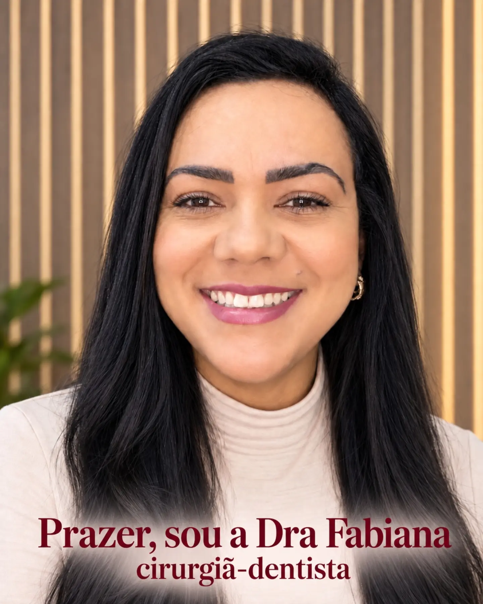
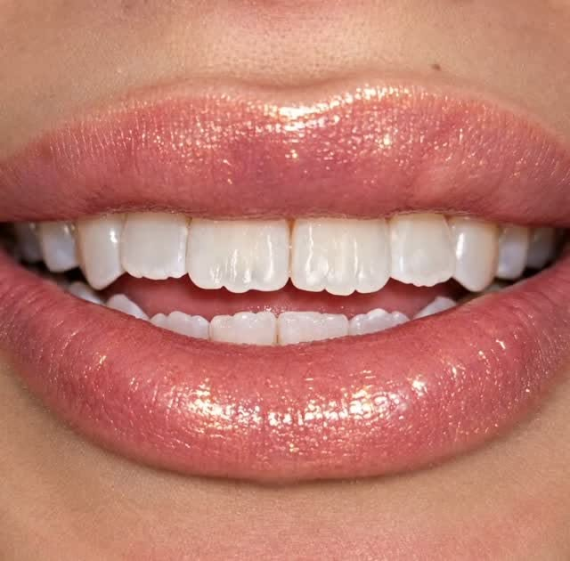
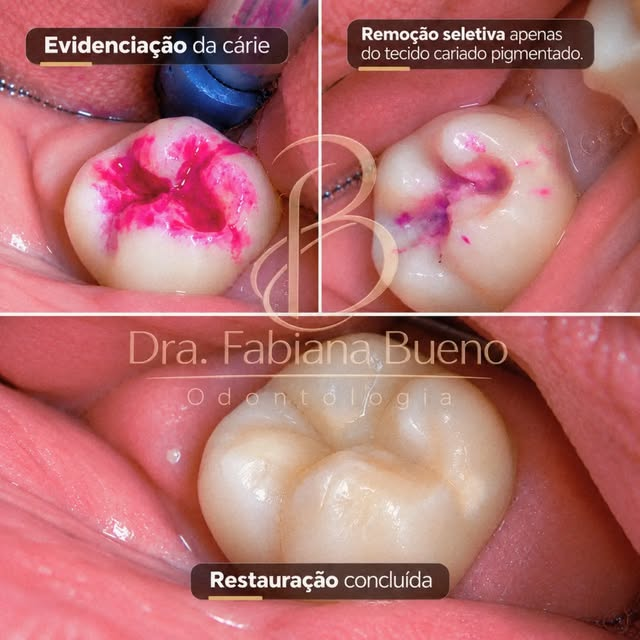
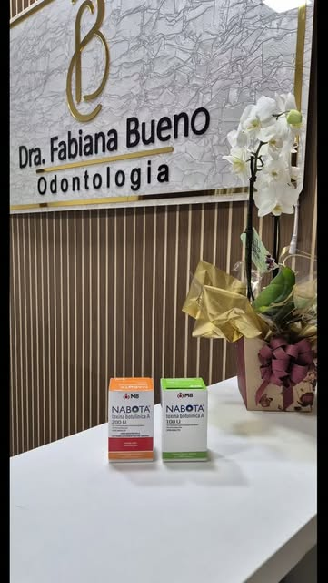

ODONTOLOGIA COM PROPÓSITO
O cuidado quetransforma vaialém do sorriso.
Odontologia com atenção, delicadeza e dedicação em cada detalhe. Conheça o cuidado da Dra. Fabiana Bueno em Guarulhos.

01 / TRATAMENTOS
Para cuidar do sorriso.
E de quem sorri.
Cuidado, naturalidade e atenção às suas necessidades, em cada etapa.

01Estética dental
Um olhar cuidadoso para a harmonia e a naturalidade do seu sorriso.
CONVERSE SOBRE ESSE CUIDADO
02Restaurações dentárias
Atenção aos detalhes para cuidar da forma e da função dos dentes.
CONVERSE SOBRE ESSE CUIDADO
03Cuidados odontológicos
Escuta e orientação para tornar o cuidado bucal parte da sua rotina.
CONVERSE SOBRE ESSE CUIDADOFotos do Instagram @fabianagbl ↗. Cada caso é único e depende de avaliação individual.
02 / UM CUIDADO MAIS HUMANO
Cada sorriso
merece um
cuidado único.
Antes de cuidar de um sorriso, existe uma pessoa para ouvir. Suas dúvidas, seus desejos e sua história merecem atenção.
Odontologia com cuidado e atenção em cada detalhe: essa é a essência da proposta da Dra. Fabiana Bueno. Um convite para olhar para você com mais delicadeza.
VAMOS CONVERSAR?
Seu sorriso merece
atenção especial.
O primeiro passo pode ser uma boa conversa.
Fale com a clínica e agende sua avaliação.
PERTINHO DE VOCÊ
Um espaço para
cuidar de você.
R. Fernando Antônio, 35 — Sl 02Jardim Tamassia, Guarulhos — SP
CEP 07140-150Traçar rota no Google Maps WhatsApp · (11) 93919-9787 ↗